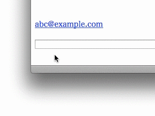

ウェブブラウズ中に意図せずmailto:リンクをクリックし、メールアプリケーションが起動してしまったことはありませんか？ 通常、ブラウザ等でmailto:リンクをクリックすると、それが意図していなくとも、すぐさまメールアプリケーションが起動してしまいます。
Mailto Interceptorを使用することで、mailto:リンクのクリック等に対して以下の動作を行えるようになります。
mailto:リンクを無視- メールアドレスをコピー（Optionキィ押下で
mailto:URL自体をコピー）
- URLをブラウザで開く（ウェブメールの作成画面等）
- 上述の動作と指定メールアプリケーションの起動を選択するメニューをポップアップする（上記のデモアニメ）
Mailto Interceptorは常駐型のアプリケーションではありません。あらかじめシステムのデフォルトメールアプリケーションとしてMailto Interceptorを指定することで、mailto:リンクのクリックに反応して自動的に起動します。その際、Dockアイコンのバウンド表示等はされず、動作後は自動終了するので、Mailto Interceptorの存在を意識することはありません。
Mailto Interceptorは、ブラウザからmailto:リンクのクリック以外にも、連絡先アプリケーションや各種アプリケーションの共有メニューからのメール送信機能に対しても反応して起動します。
無料のLite版では以下の機能が使えません。
- URLをブラウザで開く
- ポップアップメニューから指定メールアプリケーションを起動
- ポップアップメニューの編集
システム要件
OS X 10.9.3+
使用方法
- Mailto Interceptor.appを起動
- Mailto Interceptorがデフォルトのメールアプリケーションに設定されていない場合、設定シートが表示されるのでMailto Interceptorをデフォルトメールアプリケーションに設定
- Mailto Interceptorのウィンドウにある「動作」ポップアップメニューからお好みの動作を選択
- Mailto Interceptor.appを終了
この初期設定を行うことでmailto:リンクのクリック等にMailto Interceptorが反応するようになります。
ヴァージョン履歴
- ver. 1.3: 2019年12月11日
- Outlook.comメールのURLを修正
- ダークモードに対応
- その他、小修正
- ver. 1.2.2: 2014年12月19日
- 軽微な問題を修正
- アイコンを変更（Lite版）
- ver. 1.2: 2014年9月10日
- カスタムURLを定義できる機能を追加
- ポップアップメニューの項目を編集する機能を追加
- ver. 1.1.1: 2014年8月9日
- 軽微な問題を修正
- ver. 1.1: 2014年7月10日
- 動作通知パネルを表示する機能を追加
- UIの改良
- ver. 1.0: 2014年6月6日
- 最初のヴァージョン